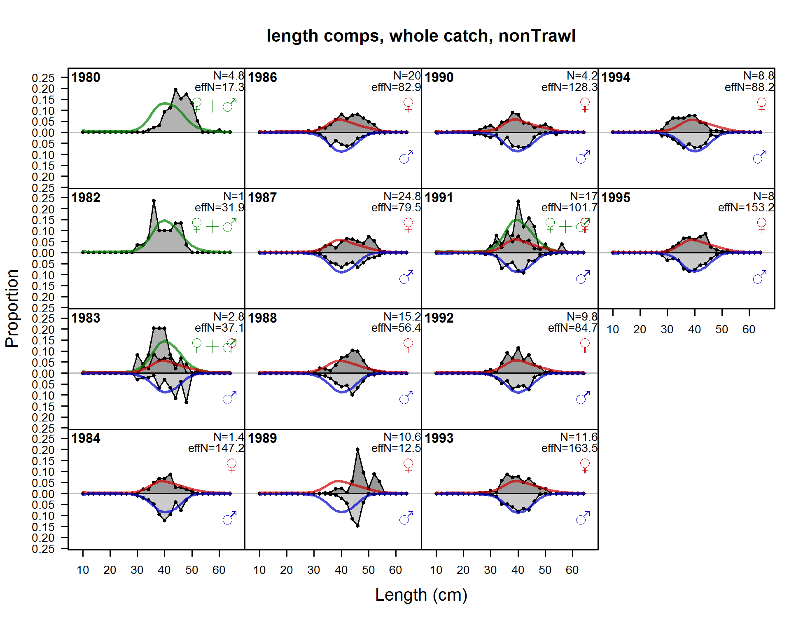

{kind=link}
{kind=link}
{kind=link}
{kind=link}
{kind=link}
{kind=link}
{kind=link}
{kind=link}
{kind=link}
{kind=link}
{kind=link}
{kind=link}
{kind=link}
{kind=link}
{kind=link}
{kind=link}
{kind=link}
{kind=link}
{kind=link}
{kind=link}
{kind=link}

length comps, whole catch, aggregated across time by fleet
file: comp_lenfit_mkt0_aggregated_across_time.png
length comps, whole catch, Trawl (plot 1 of 3)
file: comp_lenfit_flt1mkt0_page1.png
length comps, whole catch, Trawl (plot 2 of 3)
file: comp_lenfit_flt1mkt0_page2.png
length comps, whole catch, Trawl (plot 3 of 3)
file: comp_lenfit_flt1mkt0_page3.png
Pearson residuals, whole catch, Trawl (max=10.82) (plot 3 of 3)
Closed bubbles are positive residuals (observed > expected) and open bubbles are negative residuals (observed < expected).
file: comp_lenfit_residsflt1mkt0_page3.png
N-EffN comparison, length comps, whole catch, Trawl
file: comp_lenfit_sampsize_flt1mkt0.png
Francis data weighting method TA1.8 Trawl
Suggested sample size adjustment (with 95% interval) for len data from Trawl:
1.2525 (0.9184-2.174)
file: comp_lenfit_data_weighting_TA1.8_Trawl.png

length comps, whole catch, nonTrawl
file: comp_lenfit_flt2mkt0.png
Pearson residuals, whole catch, nonTrawl (max=2.96)
Closed bubbles are positive residuals (observed > expected) and open bubbles are negative residuals (observed < expected).
file: comp_lenfit_residsflt2mkt0.png
N-EffN comparison, length comps, whole catch, nonTrawl
file: comp_lenfit_sampsize_flt2mkt0.png
Francis data weighting method TA1.8 nonTrawl
Suggested sample size adjustment (with 95% interval) for len data from nonTrawl:
1.0083 (0.6595-2.8285)
file: comp_lenfit_data_weighting_TA1.8_nonTrawl.png
length comps, whole catch, Rec (plot 1 of 3)
file: comp_lenfit_flt3mkt0_page1.png
length comps, whole catch, Rec (plot 2 of 3)
file: comp_lenfit_flt3mkt0_page2.png
length comps, whole catch, Rec (plot 3 of 3)
file: comp_lenfit_flt3mkt0_page3.png
Pearson residuals, whole catch, Rec (max=5.95) (plot 3 of 3)
Closed bubbles are positive residuals (observed > expected) and open bubbles are negative residuals (observed < expected).
file: comp_lenfit_residsflt3mkt0_page3.png
N-EffN comparison, length comps, whole catch, Rec
file: comp_lenfit_sampsize_flt3mkt0.png
Francis data weighting method TA1.8 Rec
Suggested sample size adjustment (with 95% interval) for len data from Rec:
1.1871 (0.7989-1.9113)
file: comp_lenfit_data_weighting_TA1.8_Rec.png
length comps, whole catch, Tag_CPUE (plot 1 of 2)
file: comp_lenfit_flt5mkt0_page1.png
length comps, whole catch, Tag_CPUE (plot 2 of 2)
file: comp_lenfit_flt5mkt0_page2.png
Pearson residuals, whole catch, Tag_CPUE (max=1.56) (plot 2 of 2)
Closed bubbles are positive residuals (observed > expected) and open bubbles are negative residuals (observed < expected).
file: comp_lenfit_residsflt5mkt0_page2.png
N-EffN comparison, length comps, whole catch, Tag_CPUE
file: comp_lenfit_sampsize_flt5mkt0.png
Francis data weighting method TA1.8 Tag_CPUE
Suggested sample size adjustment (with 95% interval) for len data from Tag_CPUE:
3.7108 (2.3496-8.1138)
file: comp_lenfit_data_weighting_TA1.8_Tag_CPUE.png
length comps, whole catch, aggregated across time by fleet
file: comp_lenfit_mkt0_aggregated_across_time.png

Note: this plot doesn't seem to be working right for some models.
Pearson residuals, sexes combined, whole catch, comparing across fleets
Closed bubbles are positive residuals (observed > expected) and open bubbles are negative residuals (observed < expected).
file: comp_lenfit_sex1mkt0_multi-fleet_comparison.png
Note: this plot doesn't seem to be working right for some models.
Pearson residuals, female, whole catch, comparing across fleets
Closed bubbles are positive residuals (observed > expected) and open bubbles are negative residuals (observed < expected).
file: comp_lenfit_sex2mkt0_multi-fleet_comparison.png
Note: this plot doesn't seem to be working right for some models.
Pearson residuals, male, whole catch, comparing across fleets
Closed bubbles are positive residuals (observed > expected) and open bubbles are negative residuals (observed < expected).
file: comp_lenfit_sex3mkt0_multi-fleet_comparison.png
{kind=link}
{kind=link}